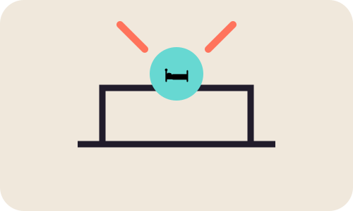

MODULE 02 · 04
🛏️ Sueño

SUBSECCIÓN
Crea un ritual de cierre
Un ritual breve antes de dormir puede ayudarte a pasar de la actividad digital al descanso. La idea no es perfección: es repetir señales sencillas que marquen el final del día.
Fuente / respaldo
NHLBI (2024), Healthy Sleep Habits.
NHLBI (2024), Healthy Sleep Habits.